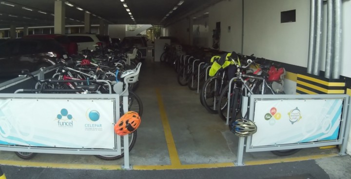
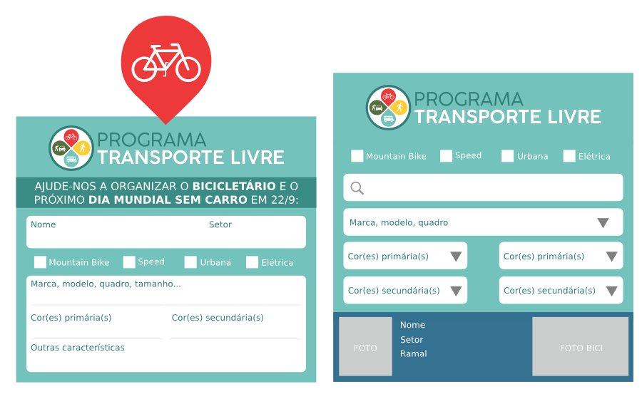
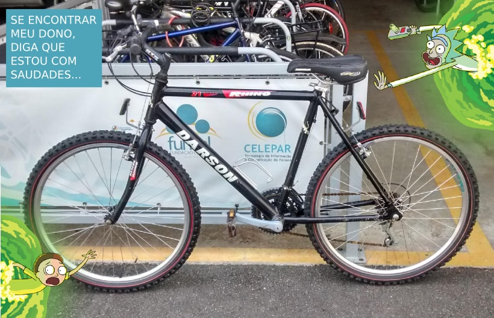
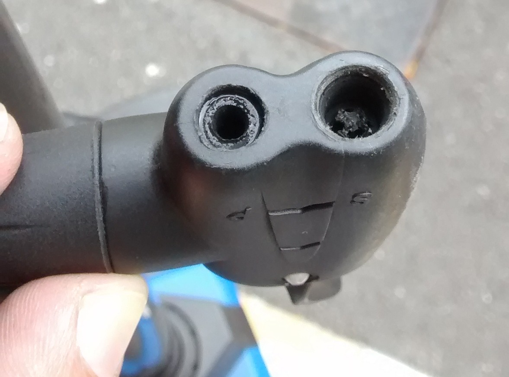
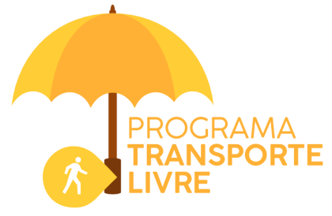
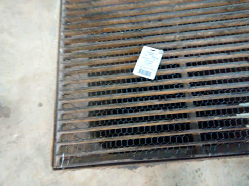
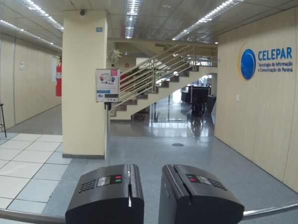
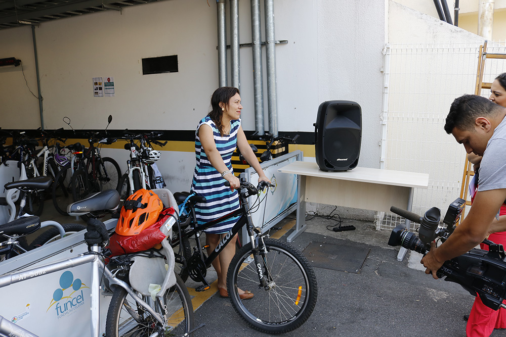

Relatório 2016/2017
- aumento significativo de ciclistas
- institucionalização do PTL
- reuniões mensais
- uso da rede social interna
- grupo "transversal", dentro da filosofia dos círculos de qualidade
- influências e impacto para adoção do modal
- Comunicação!
- cenário/dados 2016
- DBT 2016
- Reuniões iniciais + mapa mental/quadro
- Painel de ferramentas compartilhadas
- Melhorias bicicletário / percepção do espaço
- 10 anos PTL
- DBT 2017
- Comunicação
- Bike bus / passeios
- SIPAT/DMSC 2017 + carona + Festival de Curtas Transporte Livre
- Contagem diária
- Censo 2017
- Eventos FUNCEL
- CONCICLO
- próximos passos, 2018
- inventário
- proposta técnica para atualização do bicicletário
- * vestiário
- alocados em clientes/regionais?
- + ônibus
- e guarda-chuva compartilhado?







